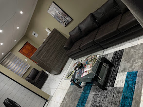

People first
A warm, respectful experience where patients can feel comfortable asking questions.
↗A welcoming medical practice serving individuals and families in the Malamulele community.

Good healthcare begins with feeling heard. This website concept introduces Dr Chauke’s practice with a clear, calm experience that helps visitors learn about the practice and find their way there.
The details on this page are a starting point and should be confirmed by the practice before publication.
Useful information, a welcoming first impression, and straightforward directions — all in one place.
A warm, respectful experience where patients can feel comfortable asking questions.
↗Make key practice details easy to find before setting out for an appointment.
↗Open directions to the practice in Google Maps from your phone or computer.
↗Use the address below to plan your route. If you are visiting for the first time, confirm opening hours and appointment arrangements directly with the practice.
388b Collins Chabane Drive
Malamulele-B, Malamulele, 0982
Limpopo, South Africa
Contact the practice directly to confirm hours, availability and any information you should bring.